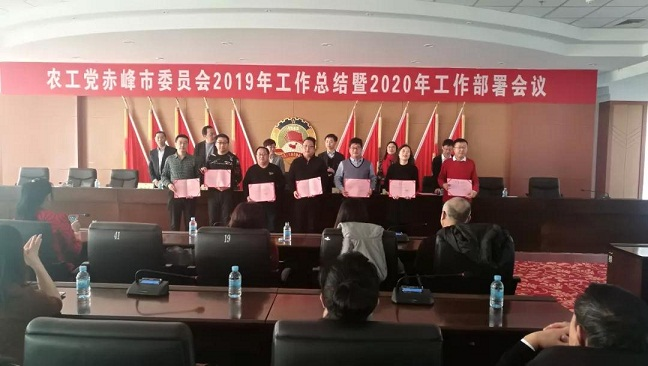
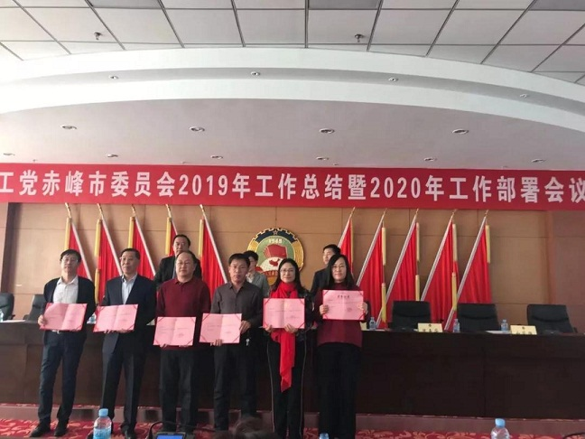

2020年1月5日，农工党赤峰市委召开2019年工作总结暨2020年工作部署会议。农工党赤峰市委主委、赤峰市政府副市长李艳茹，中共赤峰市委统战部党派科科长邢亚军出席会议，100多名农工党员参加会议。陈文武副主委主持会议。

会议对2019年工作从强化理论学习、不断提升政治素质履职能力；围绕中心服务大局、积极履行参政议政职能；深入开展“不忘合作初心，继续携手前进”主题教育活动；发挥党员优势、努力做好社会服务工作；不断加强自身建设，为党派持续健康发展提供坚强的组织保证等五个方面进行了全面总结。
会议强调，2020年，农工党赤峰市委要认真学习宣传贯彻落实中共十九大、十九届二中、三中、四中全会精神和农工党十六大精神；围绕中共赤峰市委、赤峰市政府的中心工作，积极做好参政议政工作；深入实施“人才强党”战略，全面推进组织建设；紧紧围绕健康扶贫，继续开展好健康视频录制、健康大讲堂活动，助力脱贫攻坚；组织开展好全体党员下基层、植树造林、扶贫义诊、捐资助学等活动，扩大农工党的影响力。
李艳茹主委在总结讲话中要求，一是要做赤峰市发展正能量的传播者。赤峰市近年的快速发展有着广大农工党员的积极参与奉献，今后要继续做好正能量的传播者，鼓舞士气、增加干劲，为建设赤峰“五个大市”贡献力量。二是要做好赤峰的建设者。作为赤峰市发展见证者和亲历者，要发扬斗争和开放精神，多些坚韧、知难而进、不屈不挠把本职工作做好。三是要做一名优秀农工党员。每位党员要从自身做起，要像爱护眼睛一样爱护荣誉，做一名优秀农工党员。要围绕社会热点难点问题开展调查研究，积极撰写高质量的社情民意信息，提出可操作性强的意见和建议。


会议表彰了2019年在社会服务、参政议政、思想宣传、社情民意信息方面取得优秀成绩的先进个人。新党员与大家见面，新党员代表进行了表态发言。